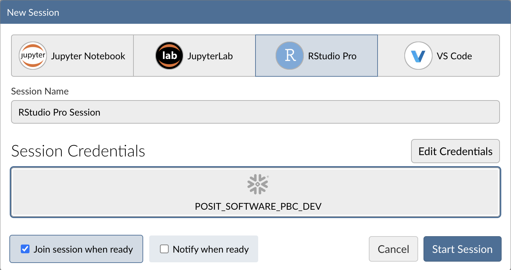
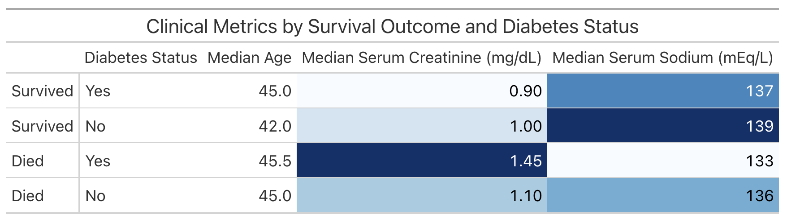
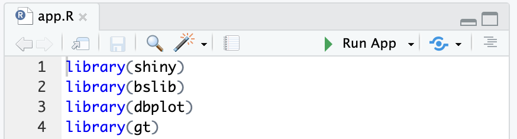

This guide will walk you through using R to analyze data in Snowflake using the Posit Workbench Native App. You'll learn how to launch the Posit Workbench Native App and use the available RStudio Pro IDE. You'll also learn how to use the {dbplyr} package to translate R code into SQL, allowing you to run data operations directly in Snowflake's high-performance computing environment.
We'll focus on a healthcare example by analyzing heart failure data. We'll then guide you through launching an R session, accessing the data, and performing data cleaning, transformation, and visualization. Finally, you'll see how to generate an HTML report, build an interactive Shiny app, and write data back to Snowflake—-completing an end-to-end R analysis entirely within Snowflake.

What You'll Need
- Familiarity with R
- The ability to launch Posit Workbench from Snowflake Native Applications. This can be provided by an administrator with the
accountadminrole.
What You'll Learn
- How to create an R session within the RStudio Pro IDE that comes with the Posit Workbench Native App.
- How to connect to your Snowflake data from R to create tables, visualizations, and more.
What You'll Build
- An RStudio Pro IDE environment to use within Snowflake.
- A Quarto document that contains plots and tables built with R, using data stored in Snowflake.
- An interactive Shiny application built with R, using data stored in Snowflake.
Along the way, you will use R to analyze which variables are associated with survival among patients with heart failure. You can follow along with this quickstart guide, or look at the materials provided in the accompanying repository: https://github.com/posit-dev/snowflake-posit-quickstart-r.
Before we begin there are a few components we need to prepare. We need to:
- Add the heart failure data to Snowflake
- Launch the Posit Workbench Native App
- Create an RStudio Pro IDE session
- Install R Packages
Add the heart failure data to Snowflake
For this analysis, we'll use the Heart Failure Clinical Records dataset. The data is available for download as a CSV from the UCI Machine Learning Repository.
We'll walk through how to download the data from UCI and then upload it to Snowflake from a CSV.
INTERACTIVITY NOTE: If you have the necessary permissions in Snowflake, you can also import the data from this S3 bucket: s3://heart-failure-records/heart_failure.csv.
Step 1: Download the data as a CSV
Download the data from UCI here, and then unzip the downloaded file.
Step 2: Add data in Snowsight
Log into Snowsight, then click Create > Add Data. You can find the Create button in the upper-left corner.

Step 3: Load data
Choose the Load Data into a Table option, then select your downloaded heart failure CSV. Specify an existing database or create a new one for the heart failure data (we called ours HEART_FAILURE). Then, select + Create a new table and name it HEART_FAILURE.
Once your find the database, you can load it into your Snowflake account by clicking the Get button on the right-hand side.

Step 4: Confirm data
You should now be able to see the heart failure data in Snowsight. Navigate to Data > Databases, then select the database to which you added the data (e.g., HEART_FAILURE). Expand the database, schema, and tables until you see the HEART_FAILURE table.

Launch Posit Workbench
We can now start exploring the data using Posit Workbench. You can find Posit Workbench as a Snowflake Native Application and use it to connect to your database.
Step 1: Navigate to Apps
In your Snowflake account, Go to Data Products > Apps to open the Native Apps collection. If Posit Workbench is not already installed, click Get. Please note that the Native App must be installed and configured by an administrator.

Step 2: Open the Posit Workbench Native App
Once Posit Workbench is installed, click on the app under Installed Apps to launch the app. If you do not see the Posit Workbench app listed, ask your Snowflake account administrator for access to the app.

After clicking on the app, you will see a page with configuration instructions and a blue Launch app button.

Click on Launch app. This should take you to the webpage generated for the Workbench application. You may be prompted to first login to Snowflake using your regular credentials or authentication method.
Create an RStudio Pro Session
Posit Workbench provides several IDEs, such as RStudio Pro, JupyterLab, and VS Code. For this analysis we will use an RStudio Pro IDE.
Step 1: New Session
Within Posit Workbench, click New Session to launch a new session to spin up your coding environment.

Step 2: Select an IDE
When prompted, select the RStudio Pro IDE.

Step 3: Log into your Snowflake account
Next, connect to your Snowflake account from within Posit Workbench. Under Credentials, click the button with the Snowflake icon to sign in to Snowflake. Follow the sign in prompts.

When you're successfully signed into Snowflake, the Snowflake button will turn blue and there will be a checkmark in the upper-left corner.

Step 4: Launch the RStudio Pro IDE
Click Start Session to launch the RStudio Pro IDE.
Once everything is ready, you will be able to work with your Snowflake data in the familiar RStudio Pro IDE. Since the IDE is provided by the Posit Workbench Native App, your entire analysis will occur securely within Snowflake.

Step 5: Access the Quickstart Materials
This Quickstart will step you through the analysis contained in https://github.com/posit-dev/snowflake-posit-quickstart-r/blob/main/quarto.qmd. To follow along, open the file in your RStudio Pro IDE. There are two ways to do this:
- Simple copy-and-paste Go to File > New File > Quarto Document and then copy the contents of quarto.qmd into your new file.
- Starting a new project linked to the GitHub repo. To do this:
- Go to File > New Project in the RStudio IDE menu bar.

- Select Version Control in the New Project Wizard

- Select Git

- Paste the URL of the GitHub repo and click Create Project
 RStudio will clone a local copy of the materials on GitHub. You can use the Files pane in the bottom right-hand corner of the IDE to navigate to
RStudio will clone a local copy of the materials on GitHub. You can use the Files pane in the bottom right-hand corner of the IDE to navigate to quarto.qmd. Click on the file to open it.
Note: SSH authentication is not available in Snowpark Container Services, so when creating projects from Git, you may need to authenticate Git operations over HTTPS, using a username and password or a personal access token.
Install R Packages
Now that we're in a familiar R environment, we need to prepare the packages we will use. For this analysis, we will use the Tidyverse suite of packages, as well as a few others.
install.packages(c("tidyverse", "DBI", "dbplyr", "gt", "gtExtras", "odbc"))
After we install the packages, we load them.
library(tidyverse)
library(DBI)
library(dbplyr)
library(gt)
library(gtExtras)
library(odbc)
We will run our code in the R environment created by the RStudio Pro IDE, but the code will use data stored in our database on Snowflake.
To access this data, we will use the {DBI} and {odbc} R packages to connect to the database. We will then use {dplyr} and {dbplyr} to query the data with R, without having to write raw SQL. Let's take a look at how this works.
Connect with {DBI}
{DBI} is an R package that allows us to connect to databases with DBI::dbConnect().
To connect to our Snowflake database, we will use a driver provided by the {odbc} package. We will need to provide a warehouse for compute, and a database to connect to. We can also provide a schema here to make connecting to specific tables and views easier.
# Connect to the database
conn <-
DBI::dbConnect(
odbc::snowflake(),
warehouse = "DEFAULT_WH",
database = "HEART_FAILURE",
schema = "PUBLIC"
)
We will save our connection as an object, named conn, which will make it easy to use.
Once we build a connection, we can see the databases, schemas, and tables available to us in the RStudio IDE Connections pane. Click on the database icon to the right of a database to see its schemas. Click on the schema icon to the right of a schema to see its tables. Click on the table icon to the right of a table to see a preview of the table.

Create tbls that correspond to tables in the database
Once we build a connection, we can use dplyr::tbl() to create tbls. A tbl is an R object that represents a table or view accessed through a connection.
heart_failure <- tbl(conn, "HEART_FAILURE")
If we did not provide the schema argument into DBI::dbConnect() earlier, we would need to specify the view with tbl(conn, in_schema("PUBLIC", "HEART_FAILURE")).
Rely on {dbplyr} to translate R to SQL
We can now use heart_failure as if it was a tibble in R. For example, we can filter rows and select columns from our data.
heart_failure_young <-
heart_failure |>
filter(age < 50) |>
select(age, sex, smoking, death_event)
When we use tbls, {dbplyr} translates our R code into SQL queries. Think of any object made downstream from a tbl like a view: it contains SQL that represents a table built from the tbl. If we want to see the SQL code that {dbplyr} generates, we can run dbplyr::show_query().
heart_failure_young |>
show_query()
SELECT
"AGE" AS "age",
"SEX" AS "sex",
"SMOKING" AS "smoking",
"DEATH_EVENT" AS "death_event"
FROM "HEART_FAILURE"
WHERE ("AGE" < 50.0)
To save compute, R waits to execute a query until we request the data that it represents.
To save memory, R stores the data as a temporary file in the database (instead of in R's global environment). When we inspect the data, R only returns the first few rows of this file to display.
heart_failure_young
# Source: SQL [?? x 4]
# Database: Snowflake 8.39.2[@Snowflake/HEART_FAILURE]
age sex smoking death_event
<dbl> <dbl> <dbl> <dbl>
1 45 1 0 1
2 49 0 0 0
3 45 1 0 1
4 48 0 0 1
5 49 1 1 1
6 45 1 0 1
7 45 1 0 1
8 45 0 0 0
9 42 0 0 1
10 41 1 1 0
# ℹ more rows
# ℹ Use `print(n = ...)` to see more rows
collect()
We can trigger R to execute a query and to return the entire result as a tibble with dbplyr::collect(). Keep in mind, that if your result is large, you may not want to collect it into R.
heart_failure_young_df <-
heart_failure_young |>
collect()
heart_failure_young_df
# A tibble: 47 × 4
age sex smoking death_event
<dbl> <dbl> <dbl> <dbl>
1 45 1 0 1
2 49 0 0 0
3 45 1 0 1
4 48 0 0 1
5 49 1 1 1
6 45 1 0 1
7 45 1 0 1
8 45 0 0 0
9 42 0 0 1
10 41 1 1 0
# ℹ 37 more rows
# ℹ Use `print(n = ...)` to see more rows
In summary
This system:
- Keeps our data in the database, saving memory in the R session
- Pushes computations to the database, saving compute in the R session
- Evaluates queries lazily, saving compute in the database
We don't need to manage the process, it happens automatically behind the scenes.
{dbplyr} can translate the most common tidyverse and base R functions to SQL. However, you may sometimes use a function that {dbplyr} does not recognize or for which there is no SQL analogue. On these occasions, you will need to collect() your data into R, where you can process it as a real tibble.
Learn more about {dbplyr} at dbplyr.tidyverse.org
You can also use {DBI} to create a new table in a database or append to an existing table.
To add a new table, use DBI::dbWriteTable(). Note that value needs to be a data.frame or tibble, which is why we passed heart_failure_young_df, the result of calling collect() on heart_failure_young.
dbWriteTable(conn, name = "HEART_FAILURE_YOUNG", value = heart_failure_young_df)
To append to an existing table, specify append = TRUE. If appending, the name argument should refer to an existing table.
Now that we understand how R will interact with the database, we can use R to perform our analysis.
We want to understand which variables in HEART_FAILURE are associated with survival of patients with heart failure.
First we convert the column names to lowercase, so we won't need to worry about capitalization.
# Standardize column names
heart_failure <-
heart_failure |>
rename_with(str_to_lower)
When we are running these commands on a database connection, {dbplyr} is translating the code into SQL for us under the hood. We don't need to write raw SQL commands, and the compute is happening directly on the database. You can pipe |> the code into show_query() if you want to see the generated SQL query.
Filter ages
For now, we'll focus on just patients younger than 50. We also reduce the data to just the columns we're interested in.
heart_failure <-
heart_failure |>
filter(age < 50) |>
select(age, diabetes, serum_sodium, serum_creatinine, sex, death_event)
Our table now looks like this.
# Source: SQL [?? x 6]
# Database: Snowflake 8.39.2[@Snowflake/HEART_FAILURE]
age diabetes serum_sodium serum_creatinine sex death_event
<dbl> <dbl> <dbl> <dbl> <dbl> <dbl>
1 45 0 137 1.1 1 1
2 49 0 138 1 0 0
3 45 0 127 0.8 1 1
4 48 1 121 1.9 0 1
5 49 0 136 1.1 1 1
6 45 1 139 1 1 1
7 45 0 145 1 1 1
8 45 0 137 1.18 0 0
9 42 1 136 1.3 0 1
10 41 0 140 0.8 1 0
# ℹ more rows
# ℹ Use `print(n = ...)` to see more rows
The heart failure data provides important insights that can help us:
- Identify factors associated with increased risk of mortality after heart failure
- Predict future survival outcomes based on historical clinical data
- Benchmark patient outcomes based on clinical indicators like serum sodium levels
Visualizing clinical variables across different patient groups can help identify patterns.
Visualize serum sodium levels
We can use {ggplot2} to visually compare sodium levels across different patient groups. In this plot, we see the distribution of serum sodium based on whether the patients have diabetes and whether they survived (0) or died (1) during the follow-up period.
heart_failure |>
mutate(
death_event = as.character(death_event),
diabetes = as.character(diabetes)
) |>
ggplot(aes(x = death_event, y = serum_sodium, fill = diabetes)) +
geom_boxplot() +
labs(
title = "Serum Sodium Levels by Diabetes Status and Survival Outcome",
x = "Survival Outcome (0 = Survived, 1 = Died)",
y = "Serum Sodium (mEq/L)",
fill = "Diabetes"
) +
theme(legend.position = "bottom")

INTERACTIVITY NOTE: The code above allows for easy visualization of other variables. You can adjust the aes() function or filter the data to explore different clinical indicators and patient characteristics.
We can continue exploring the heart failure dataset with visualizations or create a table that concisely displays multiple pieces of information at once. For example, we can use {dplyr} verbs to calculate the median values for various clinical metrics across different patient groups.
heart_failure |>
summarize(
across(
c("age", "serum_creatinine", "serum_sodium"),
\(x) median(x, na.rm = TRUE),
.names = "median_{.col}"
)
)
# Source: SQL [1 x 3]
# Database: Snowflake 8.39.2[@Snowflake/HEART_FAILURE]
median_age median_serum_creatinine median_serum_sodium
<dbl> <dbl> <dbl>
1 45 1 137
With {dplyr}'s group_by() command, we can compute separate metrics for each combination of death_event and diabetes.
comparison <-
heart_failure |>
group_by(death_event, diabetes) |>
summarize(
across(
c("age", "serum_creatinine", "serum_sodium"),
\(x) median(x, na.rm = TRUE),
.names = "median_{.col}"
),
.groups = "drop"
)
comparison
# Source: SQL [4 x 5]
# Database: Snowflake 8.39.2[@Snowflake/HEART_FAILURE]
death_event diabetes median_age median_serum_creatinine median_serum_sodium
<dbl> <dbl> <dbl> <dbl> <dbl>
1 0 0 42 1 139
2 1 1 45.5 1.45 133
3 1 0 45 1.1 136
4 0 1 45 0.9 137
This is a useful way to examine the information for ourselves. However, if we wish to share the information with others, we might prefer to present the table in a more polished format. We can do this with commands from R's {gt} package.
The following code creates a table displaying the information in comparison.
comparison |>
mutate(
death_event = case_when(
death_event == 1 ~ "Died",
death_event == 0 ~ "Survived"
),
diabetes = case_when(
diabetes == 1 ~ "Yes",
diabetes == 0 ~ "No"
)
) |>
arrange(desc(death_event), desc(diabetes)) |>
gt(rowname_col = "death_event") |>
cols_label(
diabetes = "Diabetes Status",
median_age = "Median Age",
median_serum_creatinine = "Median Serum Creatinine (mg/dL)",
median_serum_sodium = "Median Serum Sodium (mEq/L)"
) |>
tab_header(
title = "Clinical Metrics by Survival Outcome and Diabetes Status"
) |>
data_color(
columns = c(median_serum_creatinine, median_serum_sodium),
palette = "Blues"
)

Now that we've accumulated some insights, let's think about how we might present the results of our analysis to our colleagues.
We've conveniently written our analysis in a Quarto (.qmd) document, quarto.qmd. Quarto is an open-source publishing system that makes it easy to create data products such as documents, presentations, dashboards, websites, and books.
By placing our work in a Quarto document, we have interwoven all of our code, results, output, and prose text into a single literate programming document. This way everything can travel together in a reproducible data product.
A Quarto document can be thought of as a regular markdown document, but with the ability to run code chunks.
You can run any of the code chunks by clicking the play button above the chunk in the RStudio Pro IDE.

You can render the entire document into a polished report to share, with the Render button.

This will run all the code in the document from top to bottom in a new R session, and generate an HTML file, by default, for you to view and share.
Learn More about Quarto
You can learn more about Quarto here: https://quarto.org/, and the documentation for all the various Quarto outputs here: https://quarto.org/docs/guide/. Quarto works with R, Python, and Javascript Observable code out-of-the box, and is a great tool to communicate your data science analyses.
One way to share our work and allow others to explore the heart failure dataset is to create an interactive Shiny app.
We've prepared an example Shiny app in the directory: https://github.com/posit-dev/snowflake-posit-quickstart-r. Our app allows the user to explore different clinical metrics in one place.

To run the app, open app.R and then click the Run App button at the top of the script in the RStudio Pro IDE.

Change the metric in the sidebar to control which metric is plotted.
Learn More About Shiny
You can learn more about Shiny at: https://shiny.posit.co/. This example uses Shiny for R, but Shiny for Python is also available!
If you're new to Shiny, you can try it online with shinylive. It too, comes in a Python version.
R is beloved by data scientists for its intuitive, concise syntax. You can now combine this syntax with the power and peace of mind of Snowflake. The Posit Workbench Native Application provides an IDE for R within Snowflake. You can then use R's existing database packages—{DBI}, {odbc}, {dbplyr}—to access your Snowflake databases.
What You Learned
- How to create an R session within the RStudio Pro IDE that comes with the Posit Workbench Native App.
- How to connect to your Snowflake data from R to create tables, visualizations, and more.
- Build an RStudio Pro IDE environment to use within Snowflake.
- Build a Quarto document that contains plots and tables built with R, using data stored in Snowflake.
- Build an interactive Shiny Application built with R, using data stored in Snowflake.
Resources
- Source Code on GitHub
- More about Posit Workbench
- {tidyverse} package for data science in R
- {dbplyr} package for database connections
- {gt} package for tables
- Quarto for reproducible documents, reports, and data products
- Shiny for interactive dashboards and applications
- Shinylive for serverless Shiny applications